Для Британской высшей школы дизайна · Maison&Objet 2026
Стили vs Тренды
Какие прижились, а какие забыты?
Ольга Розет
- Из 1920-х в 2020-е.
- «Материя сохраняет то, что забывает глаз»
- Рассказ-показ
- 81 минута лекции
- 33 фрагмента рассказа
- 7 осей анализа
Запись целиком · 00:00 – 1:20:52
Инструмент Ольги Розет
Оси анализа
Семь осей — рабочая оптика: по ним разбирается любой интерьер, и по ним же собраны главы этого рассказа.
- Формообразование
Морфология
Скульптура, мутация, ландшафт
Язык формы: от историчных силуэтов и барочной театральности до мутирующих ландшафтных форм и скульптурной мебели. Как рождается форма — из истории, из природы или из чистой геометрии.
- Цвета
Интенсивность, температура, характер
Генеральные позиции цвета: интенсивность (яркие, приглушённые), температура (тёплые, холодные), место цвета в орнаменте. Минеральная палитра 2026 — терракота, охра, известняк; акценты — оливковый и вишнёвый.
- Орнаменты
Узор как выбор, а не украшение
Геометричные, растительные, гибридные
Геометрические или растительные? Или и те, и другие вместе. Переосмысление орнаментики из Ар-деко, фольклорных мотивов и традиционных ремесленных паттернов.
- Текстуры
Тактильность и столкновение фактур
«Тач-тач-тач», множество фактур
Тренд на огромное количество текстур в одном месте. Столкновение разных по тактильности материалов — фольклорный текстиль рядом с камнем, вафельный лён рядом с кожей. Задержаться в телесном опыте.
- Материалы
Честность сырья без имитаций
Камень, дерево, металл, стекло, лён
Природное сырьё без имитаций: необработанный травертин, массив палисандра, вафельный лён, кованый металл, застывшее стекло. Марцин Русак (Flower Infused Glass), Facultative Works (металл как органическая складка).
- Технологии
Крафт, 3D-печать и ручные техники
Соединение ремесленного крафта и высоких технологий: 3D-печать, биомимикрия, переосмысление традиционных технологий. Артизаны как мост между хай-теком и ручным трудом.
- Философия времени
Идеология и философия времени и места
Деглобализация, экология, мета-модерн
Идеология, философия времени и географической точки: деглобализация, устойчивое развитие, замедление перепроизводства, локальная идентичность.
Глава 1 · 00:00 – 16:47Каркас и реакция
00:00 – 16:46
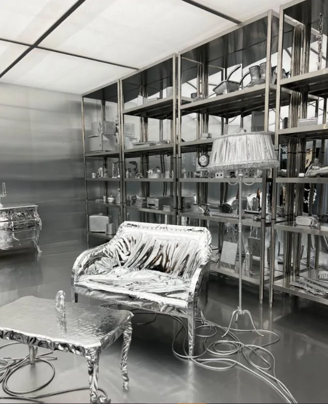
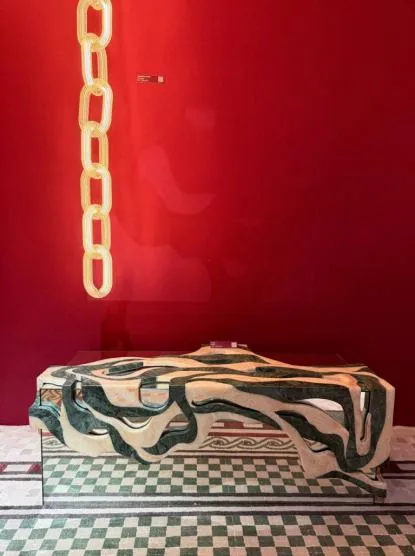
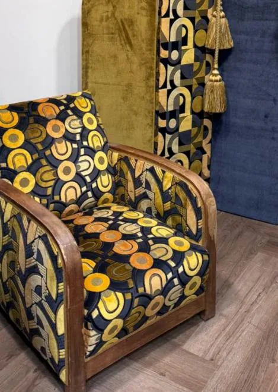
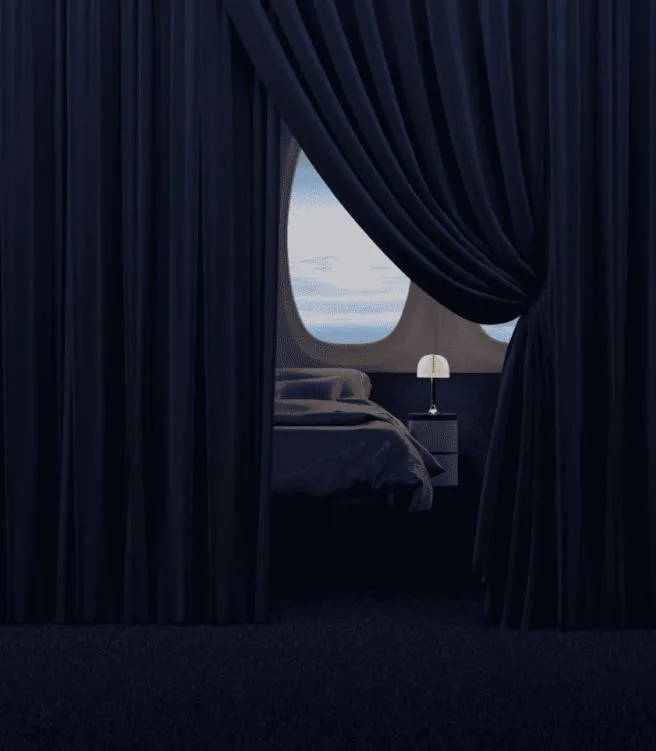
СТИЛИ VS ТРЕНДЫ
Введение · титул
Стили vs ТрендыОльга Розет — художник, искусствовед, куратор программы «Декорирование интерьера» в БВШД
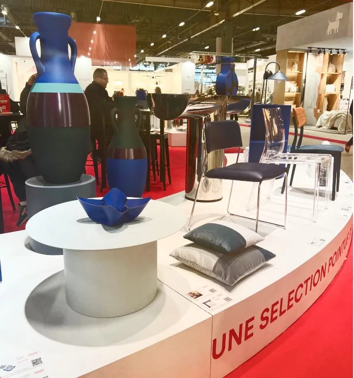
Дизайн всегда находится в мировом политическом и экономическом контексте. На тренды дизайна влияют глобальные предпосылки.
Теория · макростили
Большие стили эпохиСтиль — это фундаментальный каркас эпохи, а тренд — её быстрая реакция
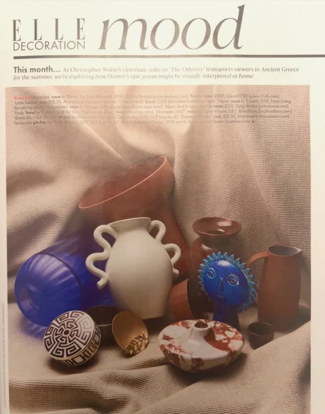
Понятийный аппарат
Определение трендаTrend — основная тенденция, направление изменения настроений и потребностей общества
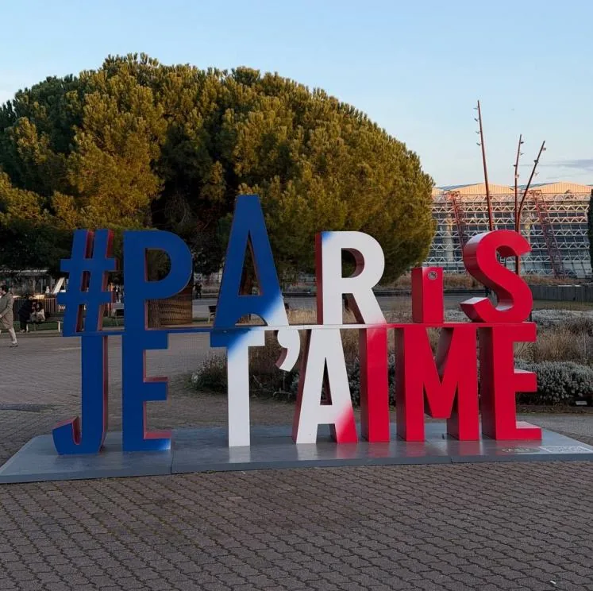
Какие тренды Maison&Objet
прижились в дизайне интерьеров,
а какие оказались забыты
Maison&Objet 2026
Возвращение к корнямМетаморфоза · Мутация · Переосмысленное барокко · Неофольклор
Глава 2 · 16:47 – 31:17Гарри Нуриев — Transformism
Гарри Нуриев, дизайнер года Maison&Objet, отказывается от бесконечного перепроизводства форм: ценность переходит к смене угла зрения.
- Отказ от избытка.
- Пересборка утилитарного.
- Честность взгляда.
16:46 – 31:17
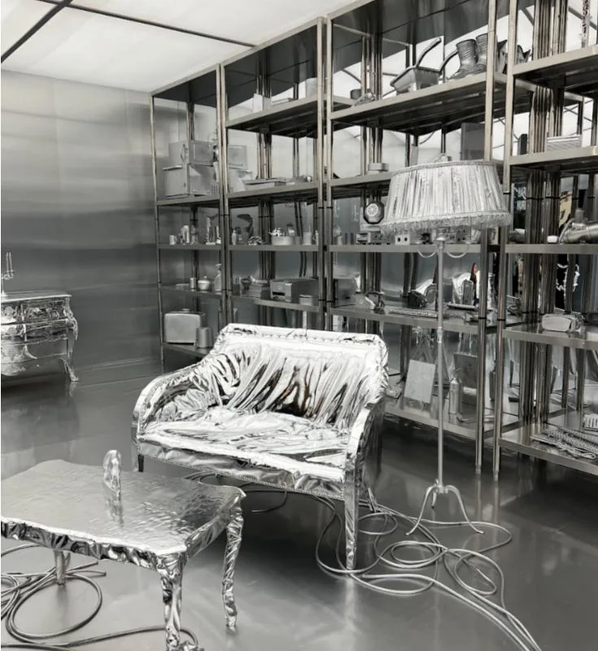
TRANSFORMISM BY HARRY NURIEV
«Трансформизм — это способ видеть, чувствовать, двигаться по миру. Мы живем в эпоху, переполненную объектами, данными, бесконечными идеями. Если XVIII век говорил цветом, XIX — формой, а XX —философией, то сегодняшний голос — это голос восприятия. Нам нужно не больше изобретений, а ясность, чуткость, эмпатия. Пришло время не создавать больше, а видеть яснее».
ТРЕНД
МЕТАМОРФОЗА
Дизайнер года · манифест
Манифест Transformism«Если XVIII век говорил цветом, XIX — формой, а XX — философией, то сегодняшний голос — это голос восприятия... Пришло время не создавать больше, а видеть яснее»
Ольга Розет
Глава 3 · 31:17 – 50:58Витрина ищет ремесло
31:17 – 50:58
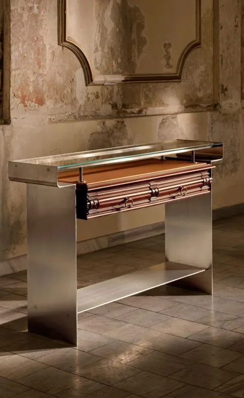
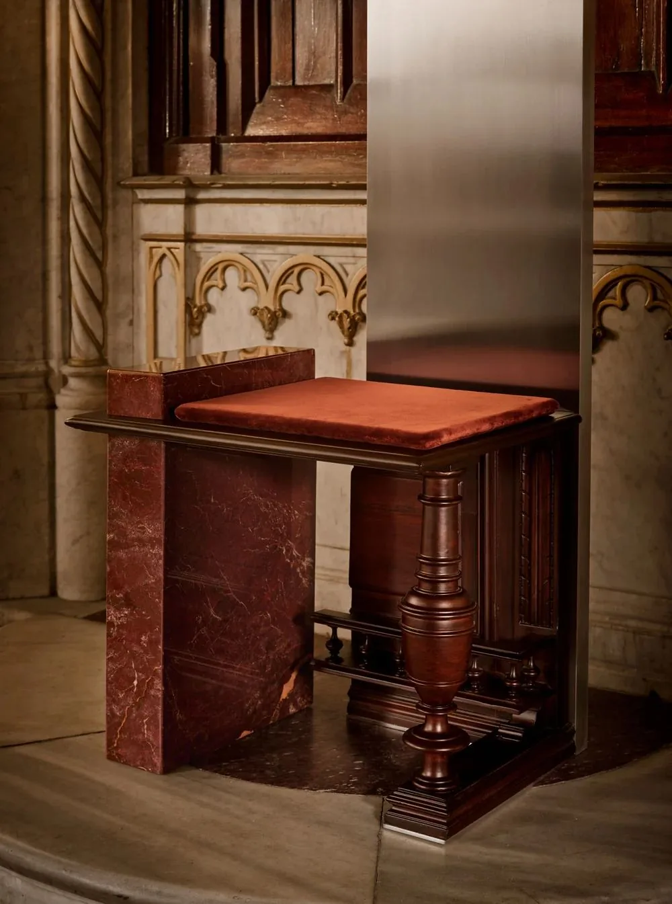
glifart.com/
Retail · Злата Корнилова
Злата КорниловаТактильный текстиль, живой гобелен и авторский арт-объект
Соединение архаичного ремесла и современного пространственного жеста.
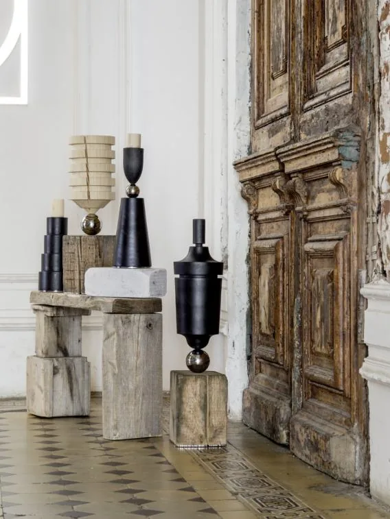
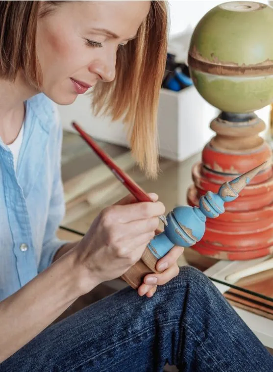
Злата Корнилова
Retail
Архаика и жестСохранение ручного ткачества в диалоге с современной архитектурой
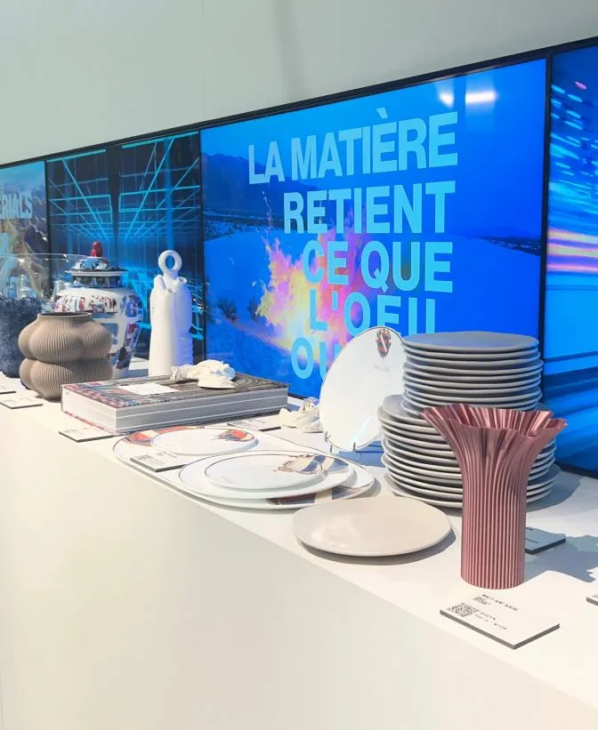
Сектор Retail
«What's New? In Retail»
Куратор: Франсуа Делькло
Материя сохраняет то, что забывает глаз.
ТРЕНД
МУТАЦИЯ НЕОФАЛЬКЛОР
What's New? In Retail
Куратор Франсуа Делькло«Материя сохраняет то, что забывает глаз»
Ольга Розет
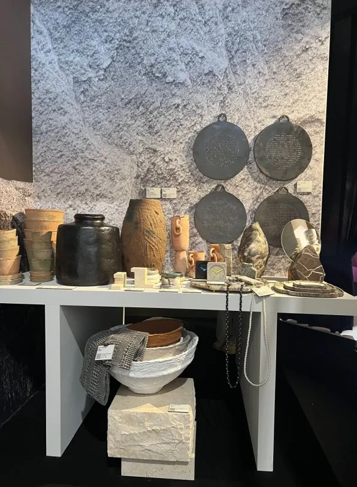
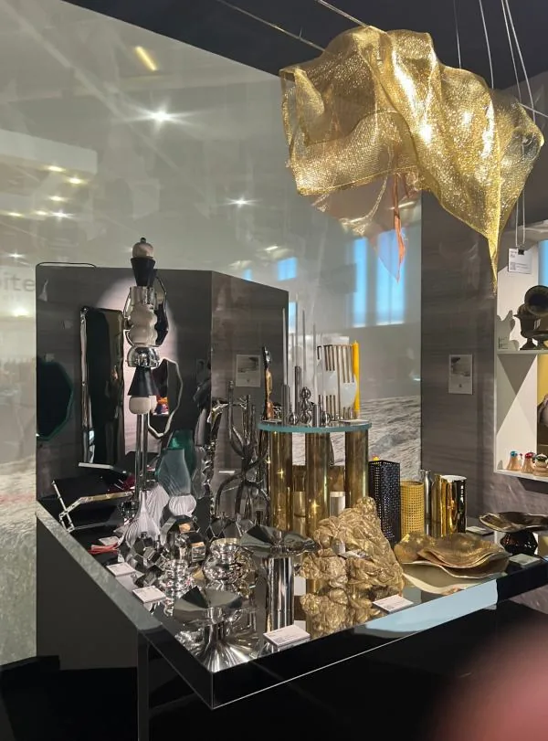
Retail · мутация
Поверхность обретает рельефМатериалы обретают природную шероховатость и текучесть
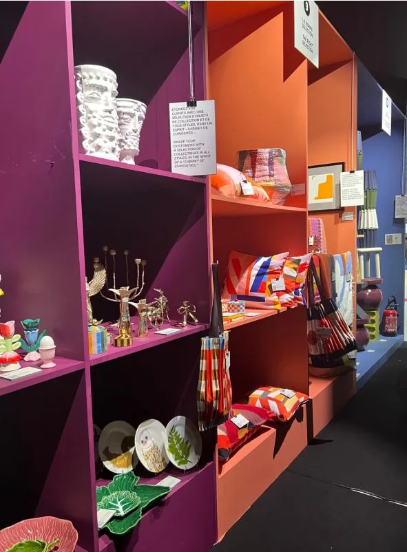
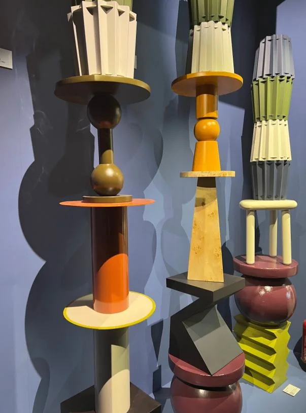
Retail · неофольклор
Культурная память предметовПереосмысление локальных ремесел без ухода в этнографический китч
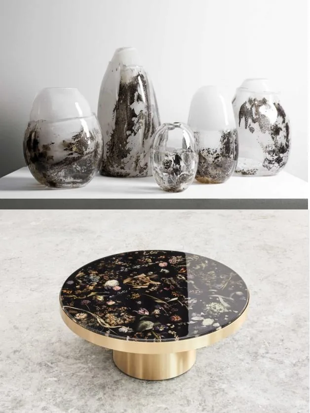
Вазы из серии
Flower Infused Glass Марцин Русак
Retail · Marcin Rusak
Bio-infused Craft
Марцин РусакFlower Infused Glass — застывшие во времени живые цветы, биомимикрия и хрупкость
Смола и стекло останавливают увядание; заземление — в природной хрупкости.
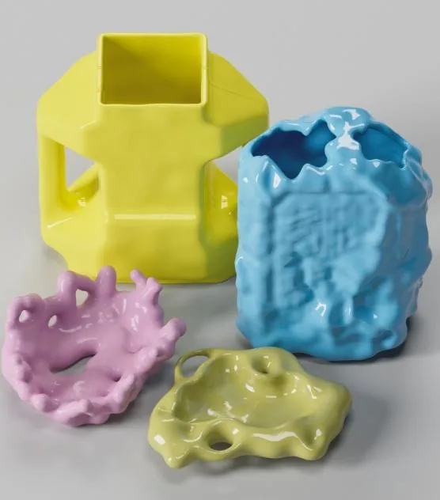
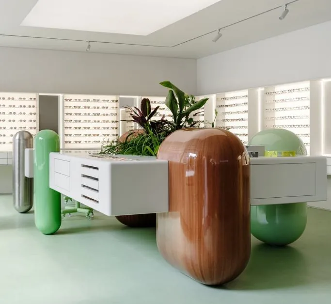
Facultative Works
Эдуард Еремчук и Катя Питицкая
Retail · Эдуард Еремчук и Катя Пятицкая
Eremchuk & Pyatitskaya
Facultative WorksМеталл как органическая ткань. Индустриальный ресайкл с человеческим теплом
Металл как органическая складка: ресайкл и новая тактильность промышленного материала.
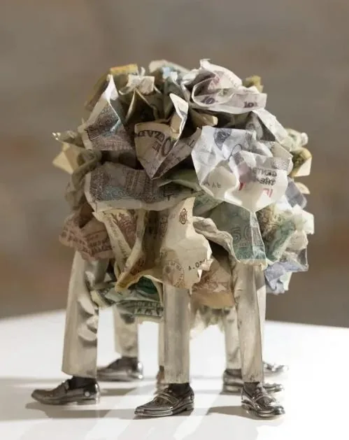
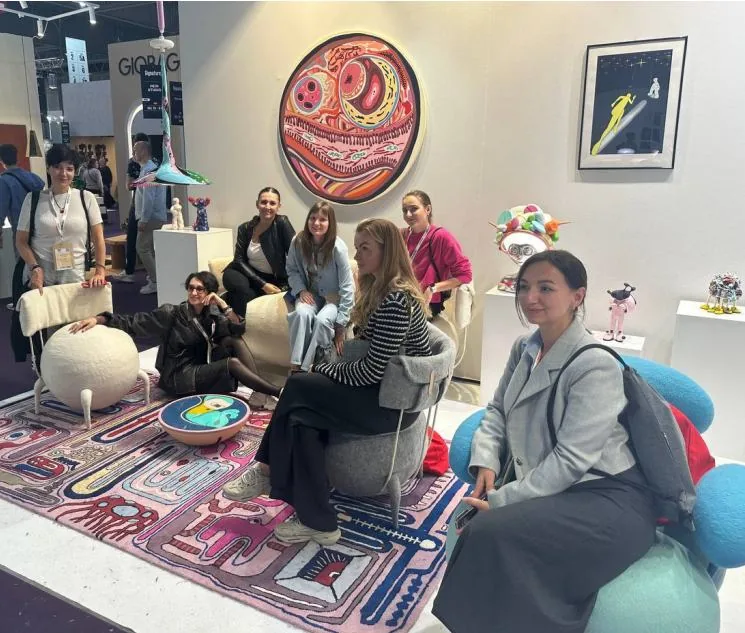
Yoomoota (Тарас Желтышев)
Retail · Yoomoota
Biomorphic Art
Yoomoota · Тарас ЖелтышевБиоморфная пластика и сказочная анатомия предметов в жилом интерьере
Глава 4 · 50:58 – 1:08:29Номер без псевдоискусства
Освобождение гостиничного номера от псевдоискусства. Драматизм через пустоту
50:58 – 1:08:29
Сектор Hospitality
Куратор: Руди Генар
ТРЕНД
МЕТАМОРФОЗА
(относится к типологии пространства трансформация гостиничного номера через деконструкцию (устранение бессмысленных объектов: псевдоискусства, стандартизированные элементы комфорта)
ТРЕНД
ПЕРЕОСМЫСЛЕННОЕ БАРОККО
(драмматический эффект достигается не через нагромождение декора, а через пустоту и концептуальность)
What's New? In Hospitality
Куратор Руди ГенарМетаморфоза гостиничного пространства через освобождение от псевдоискусства
Номер как храм тишины: камень, лён, отсутствие лишнего.
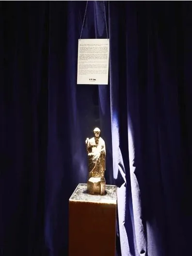
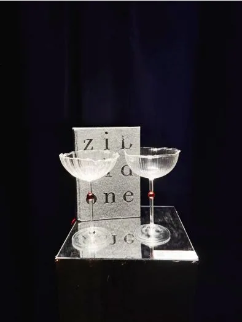
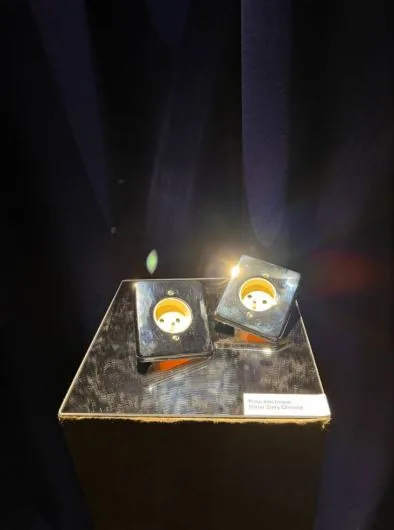
Hospitality · пространство
Барокко через пустотуДраматизм строится тишиной и светом, а мебель уходит
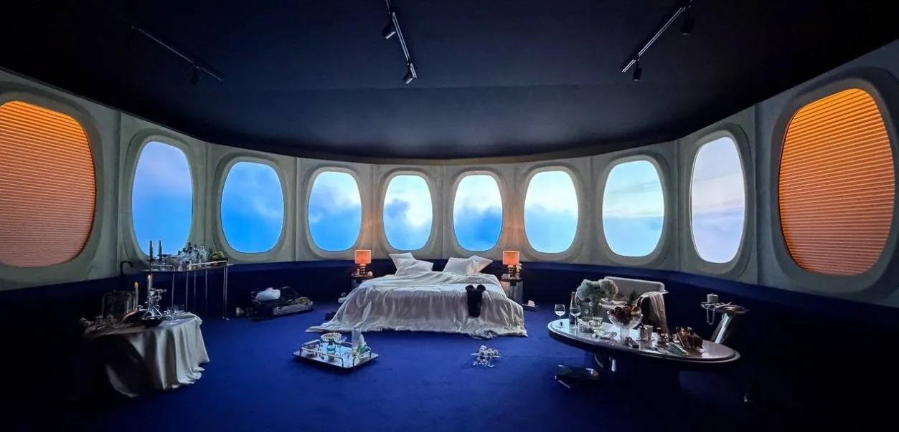
Hospitality · фактуры
Камень и лёнПространство, где тело отдыхает от визуального шума
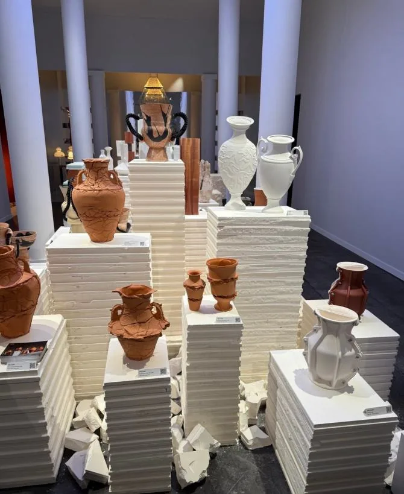
«What's New? In Decor»
Куратор Елизабет Лериш
Проект Элизабет Лериш на январской выставке 2026 года получил название «Археология будущего» (An Archaeology of the Future).
ТРЕНД
ПЕРЕОСМЫСЛЕННОЕ БАРОККО
(базовый принцип экспозиции — гибридизация исторических стилей. Происходит использование архетипичных архитектурных форм прошлого для конструирования новых функциональных объектов, театрализация экпозиции)
ТРЕНД
НЕОФОЛЬКЛОР
(фиксация на традиционных методах производства и их возвращение в современный цикл)
What's New? In Decor
Куратор Элизабет ЛеришПроект «Археология будущего» (An Archaeology of the Future)
Неофольклор, раскопки культурных слоёв и гибридизация эпох.
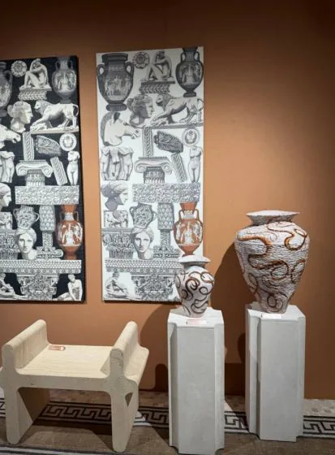
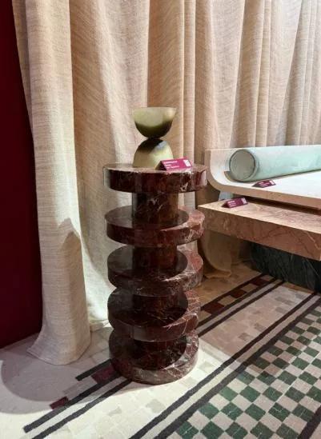
Decor · гибридизация
Слои времениСоединение античных силуэтов и цифровой параметрики
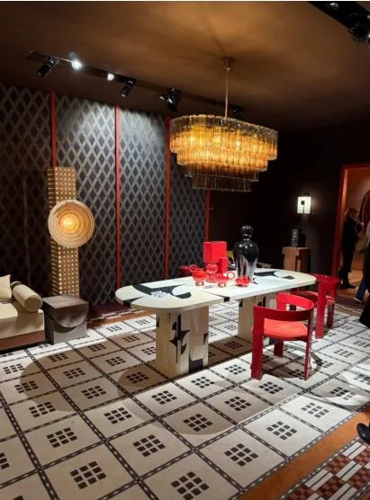
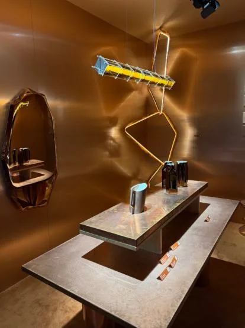
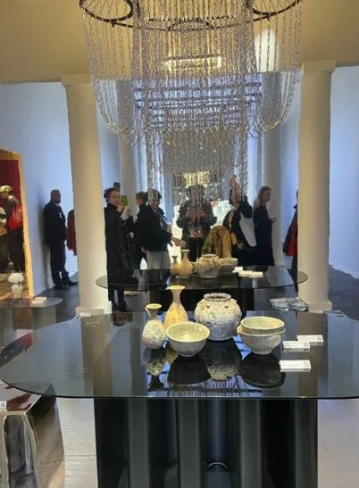
Decor · неофольклор
Глина, терракота, шерстьГлина, терракота, шерсть ручного прядения как основа уюта
Глава 5 · 1:08:29 – 1:14:11Подиум становится домом
Съёмка разворотов — её собственная; фрагменты приводятся в обзорных целях с указанием издания.
1:08:29 – 1:14:11
Полистаем интерьерные журналы 2026
Журналы 2026 · разбор
Листаем бумажные номераЛистаем иностранные интерьерные журналы: те же темы выставки — в реальных жилых домах
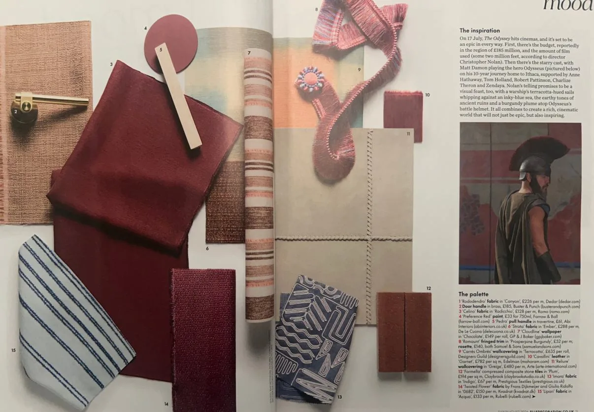
Elle Decoration · июль–август 2026
Палитра из образцовПодборка тканей, камня и краски к одной теме: терракота, бордо, чернильно-синий
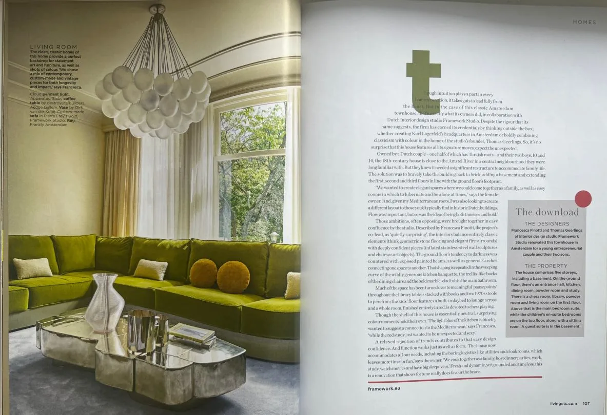
Livingetc · май 2026
Зелёный бархат, стеклоГостиная амстердамского дома: изогнутый диван оливкового бархата, люстра-гроздь матового стекла, столик текучей металлической формы
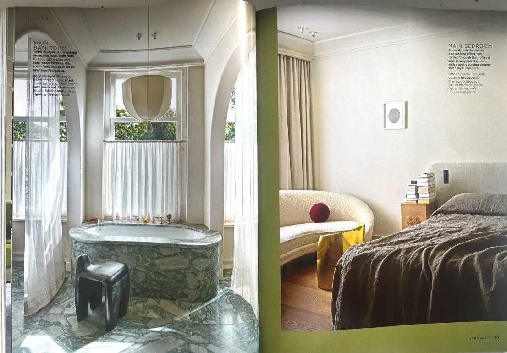
Livingetc · май 2026
Мрамор и лёнВанная в зеленоватом мраморе и спальня в минеральной гамме: букле, лён, пробка
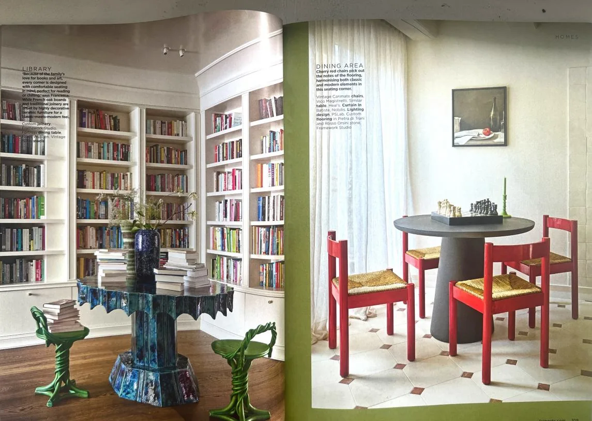
Livingetc · май 2026
Красный акцентБиблиотека с керамическим столом-постаментом и столовая, где цвет держат вишнёвые стулья с плетёными сиденьями
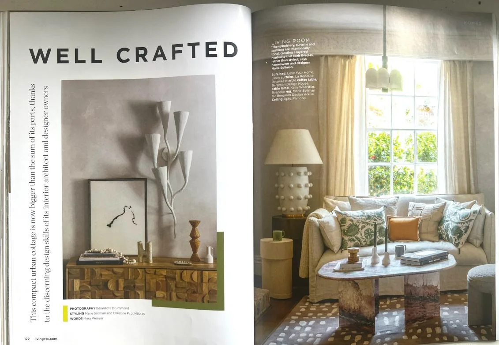
Livingetc · май 2026
Ремесло в квартиреМатериал о ремесле: скульптурное бра из гипса, комод из наборного дерева, слоистый текстиль, столик из оникса
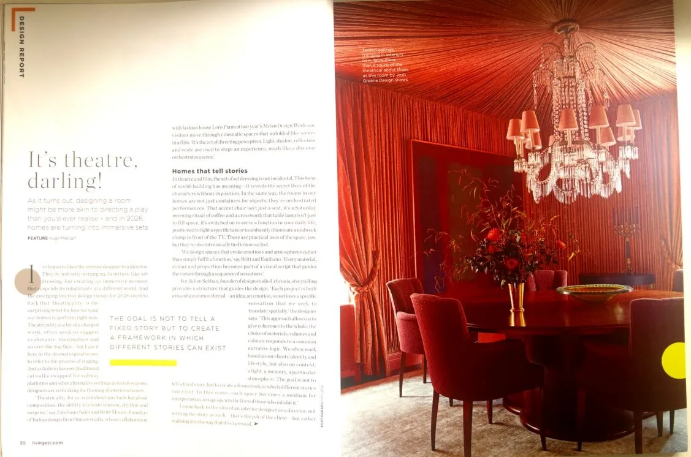
Livingetc · май 2026
Театральность вернуласьСтоловая целиком в красном: драпированный потолок, хрустальная люстра, бархатные стулья
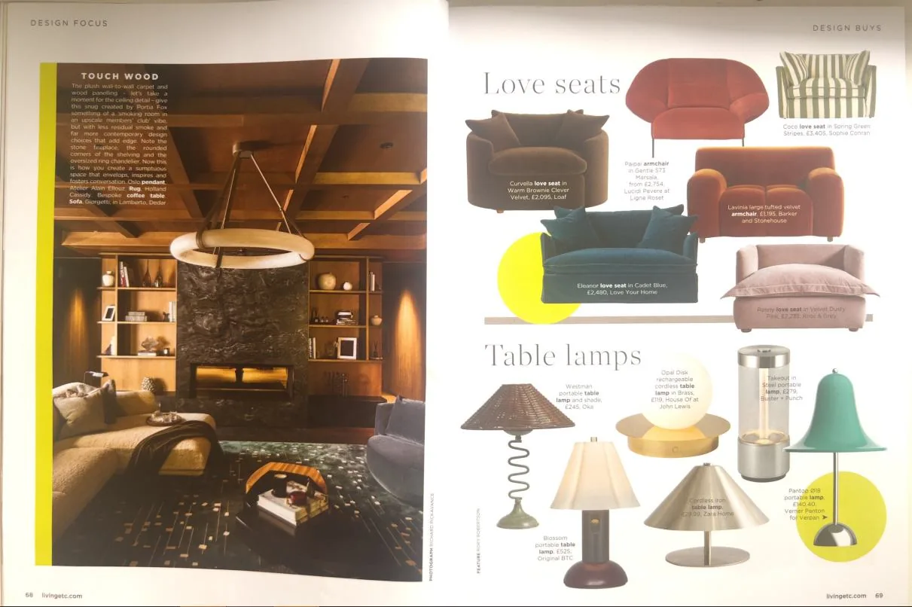
Livingetc · май 2026
Дерево и предметыКомната в тёмном дереве и товарные полосы номера — кресла-диваны и настольные лампы
Elle Decoration · июль–август 2026
Отель Bus PalladiumРубрика Focus · Travel: парижский клуб Bus Palladium стал отелем по проекту Studio KO — модульный диван De Sede, леопардовое изголовье, зеркальная ниша
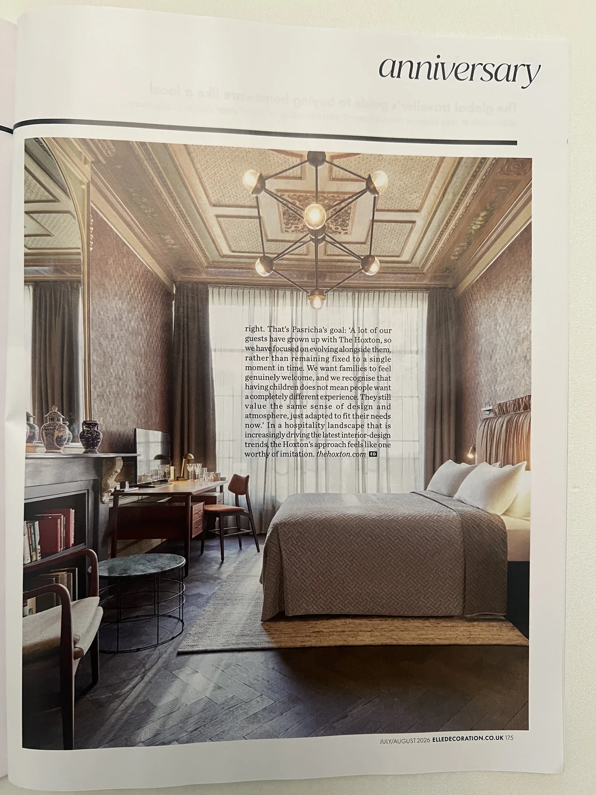
Elle Decoration · июль–август 2026
Отель The HoxtonКессонный потолок, латунная люстра-молекула, ёлочный паркет и джутовый ковёр
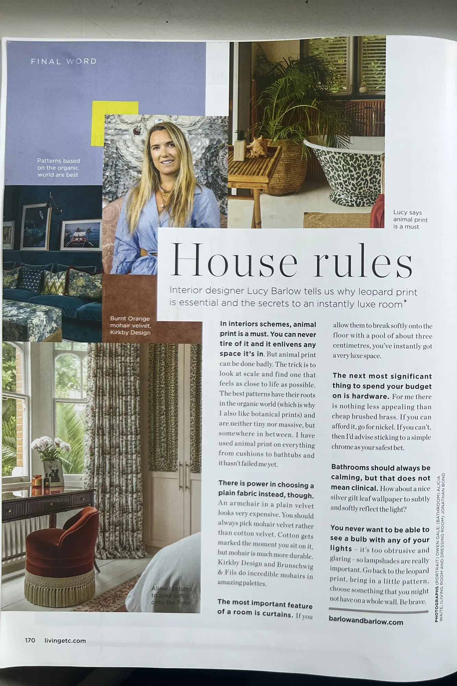
Livingetc · май 2026
Правила Люси БарлоуДекоратор Люси Барлоу об анималистичном принте, мохеровом бархате и шторах как главной детали комнаты
Глава 6 · 1:14:11 – 1:20:51Оптику можно калибровать
Всё связано с нашим «тач-тач-тач» — задержаться на этой земле, задержаться в телесном опыте
1:14:11 – 1:20:51
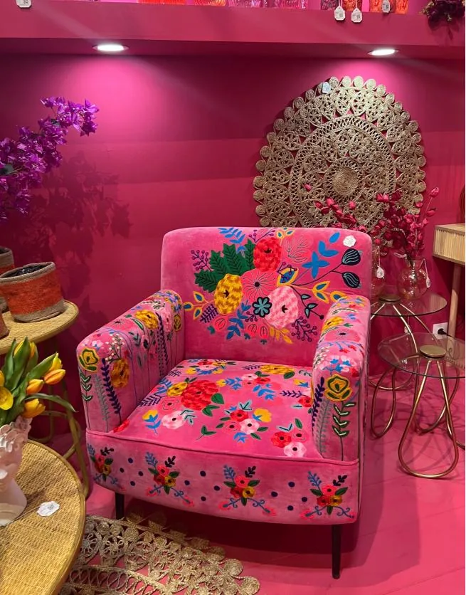
Самостоятельная аналитика трендов
Формообразование (морфология), цвета, орнаменты, текстуры, материалы, технологии, идеология/философия времени.
Инструмент · аналитика
Самостоятельная аналитика«Формообразование (морфология), цвета, орнаменты, текстуры, материалы, технологии, идеология/философия времени»
Ольга Розет
Матрица семи осей
Объективный инструмент для декоратора и архитектора: обоснование концепции и сметы перед заказчиком.
Старт 22 октября 2026
Декорирование интерьера
8 месяцев практики. Авторская программа Ольги Розет в Британской высшей школе дизайна.
- Очно, Москва
- Практика и дипломы
- Калибровка оптики